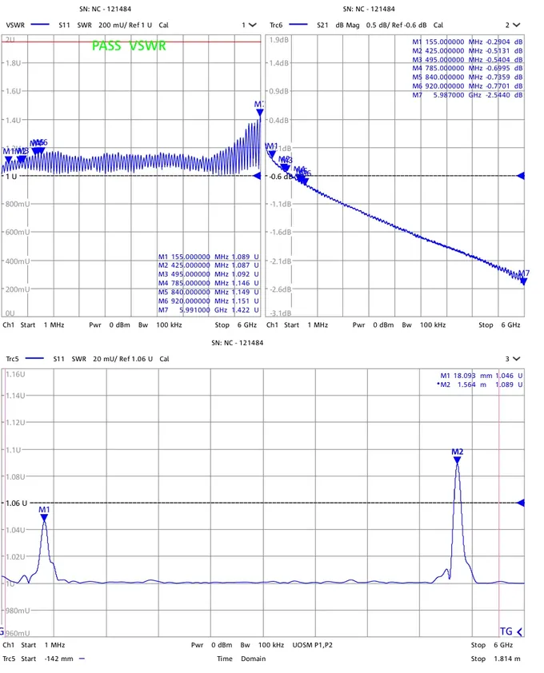

Support
Northcomm Spec Lookup provides the comprehensive test report that originally shipped with your product. Type the serial printed on the label and the report opens. No sign-in, no account needed.
Looking up a serial number
- Find the serial number on the label attached to the product. It starts with "NC" and a number, for example NC-121483.
- Type it into the search box on the home page. Dashes, spaces and case sensitivity are ignored, so 121483 and NC-121483 both work.
- Choose Retrieve report. The matching report appears on the page.
Nothing comes up for a serial number
If the page says no report is on file, check the digits against the label. If it still is not here, there may be no report on file for it. Please note that results are available for all serialized products manufactured after August 2026.
The report will not load
The report appears right on the page after you look up a serial number. Reports are large documents, so on a slow connection one can take a few seconds to load. Use Download to save a copy or Print to print it.

What's in a report?
The comprehensive test report that originally shipped with your product.
Voltage standing wave ratio across the swept frequency range.
How much signal the product loses end to end.
Where along the product a reflection occurs, if any.
The bench result recorded on the day it was tested.
A few things people ask.
Where is the serial number?+
The serial number isn't found.+
What's in a report?+
Do I need an account?+
Contact Us
For further assistance please connect with us at info@northcommtechnologies.com.